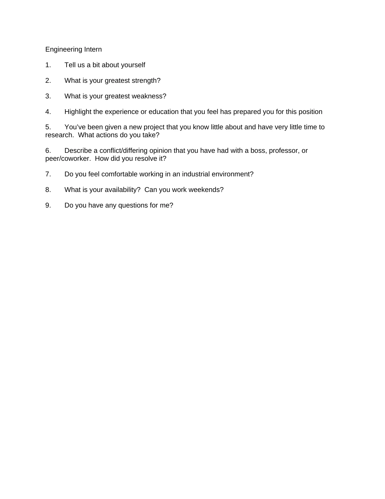
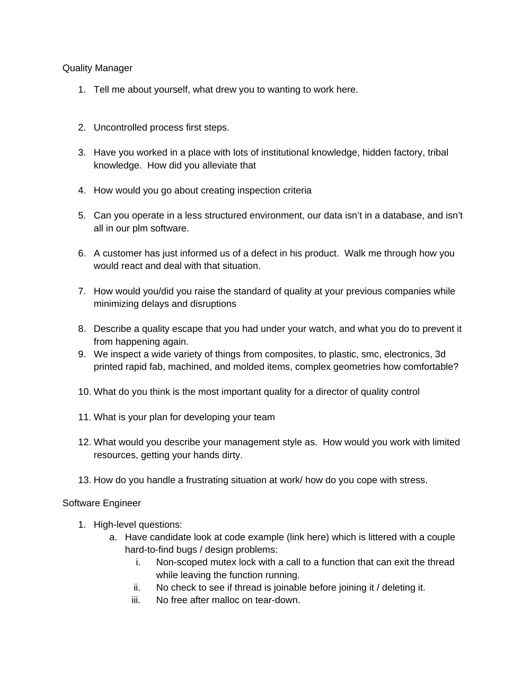
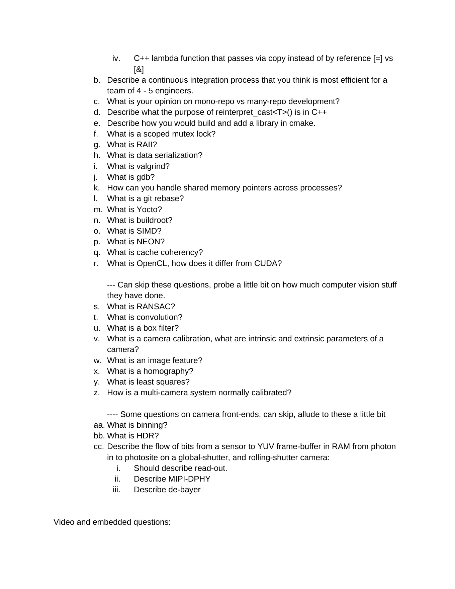
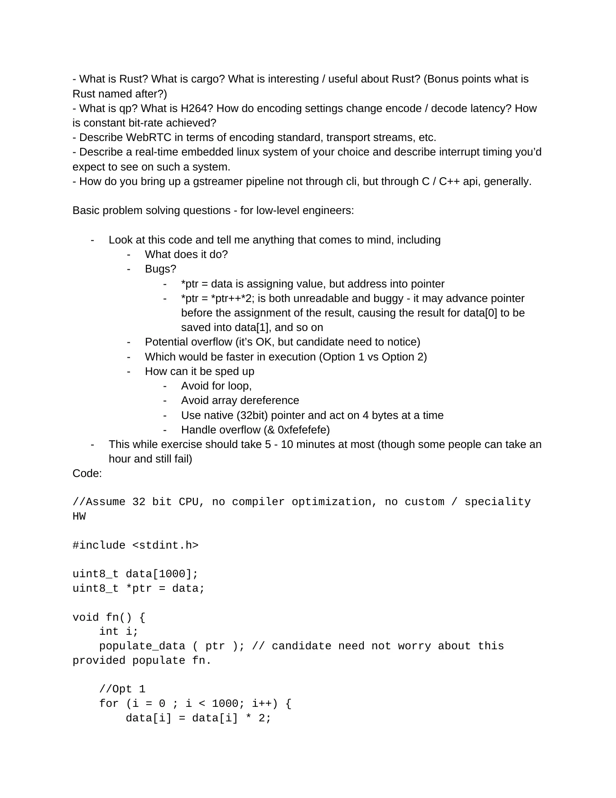
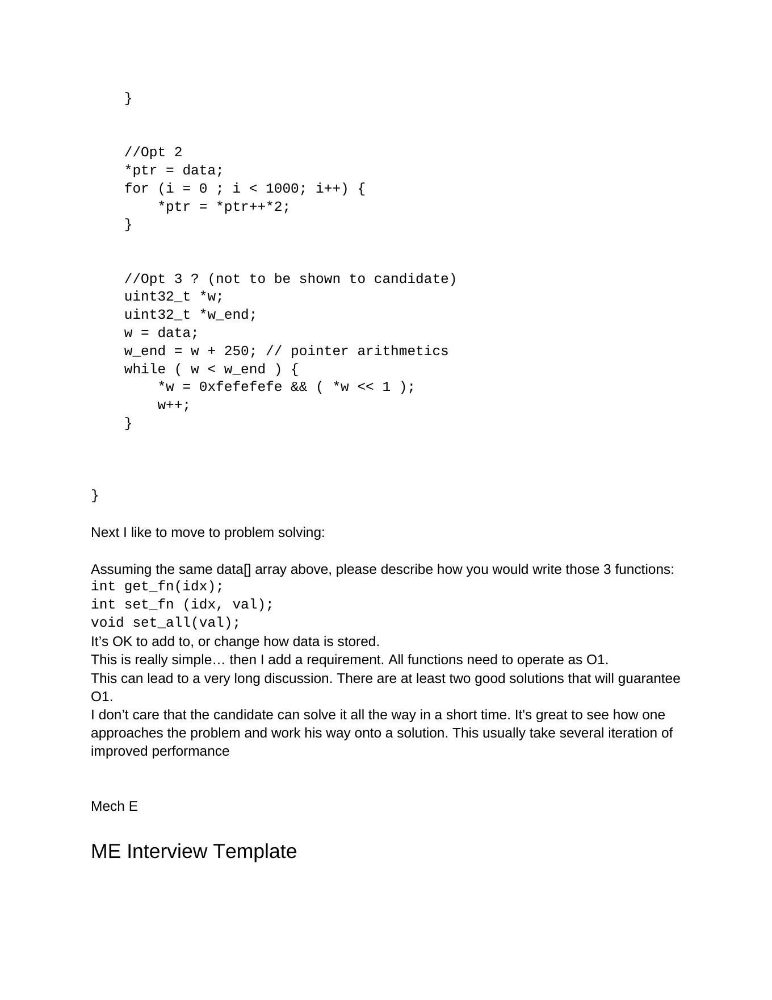
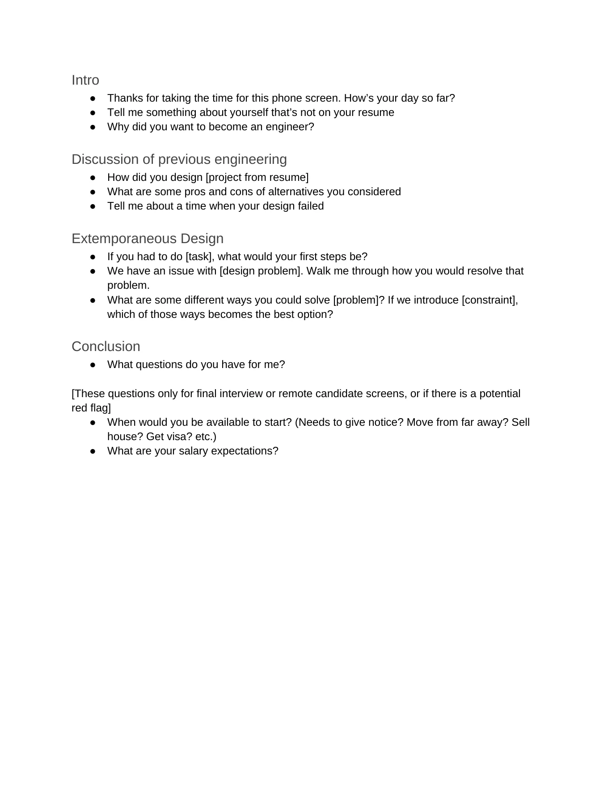
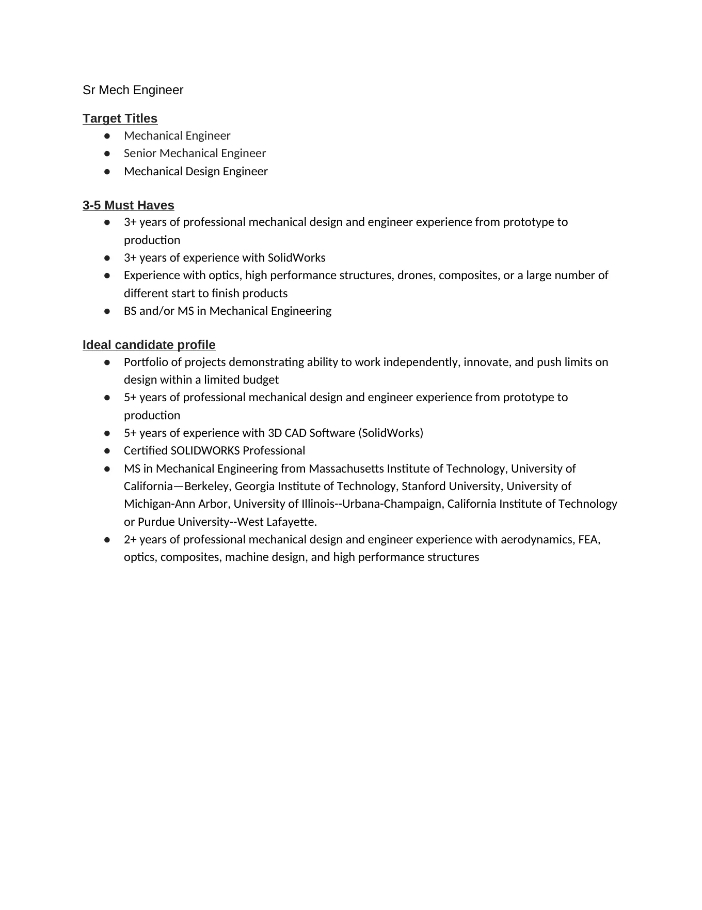

Page 1Junior Engineer
1. Tell us a bit about yourself.
2. What is your greatest strength?
3. Do you think you can bring some of that standardization to our team?
4. What is your greatest weakness?
5. What do you know about our company and what we do?
6. Why do you want this job?
7. What's your ideal company? What attracted you to this company?
8. Why should we hire you?
9. Highlight the experience or education that you feel has prepared you for this position
10. You’ve been given a new project that you know little about and have very little time to
research. What actions do you take?
11. Describe a conflict/differing opinion that you have had with a boss, professor, or
peer/coworker. How did you resolve it?
12. Do you feel comfortable working in an industrial environment?
13. What is your availability? Can you work weekends?
14. Do you have any questions for me?

Page 2Engineering Intern
1. Tell us a bit about yourself
2. What is your greatest strength?
3. What is your greatest weakness?
4. Highlight the experience or education that you feel has prepared you for this position
5. You’ve been given a new project that you know little about and have very little time to
research. What actions do you take?
6. Describe a conflict/differing opinion that you have had with a boss, professor, or
peer/coworker. How did you resolve it?
7. Do you feel comfortable working in an industrial environment?
8. What is your availability? Can you work weekends?
9. Do you have any questions for me?

Page 3Quality Manager
1. Tell me about yourself, what drew you to wanting to work here.
2. Uncontrolled process first steps.
3. Have you worked in a place with lots of institutional knowledge, hidden factory, tribal
knowledge. How did you alleviate that
4. How would you go about creating inspection criteria
5. Can you operate in a less structured environment, our data isn’t in a database, and isn’t
all in our plm software.
6. A customer has just informed us of a defect in his product. Walk me through how you
would react and deal with that situation.
7. How would you/did you raise the standard of quality at your previous companies while
minimizing delays and disruptions
8. Describe a quality escape that you had under your watch, and what you do to prevent it
from happening again.
9. We inspect a wide variety of things from composites, to plastic, smc, electronics, 3d
printed rapid fab, machined, and molded items, complex geometries how comfortable?
10. What do you think is the most important quality for a director of quality control
11. What is your plan for developing your team
12. What would you describe your management style as. How would you work with limited
resources, getting your hands dirty.
13. How do you handle a frustrating situation at work/ how do you cope with stress.
Software Engineer
1. High-level questions:
a. Have candidate look at code example (link here) which is littered with a couple
hard-to-find bugs / design problems:
i. Non-scoped mutex lock with a call to a function that can exit the thread
while leaving the function running.
ii. No check to see if thread is joinable before joining it / deleting it.
iii. No free after malloc on tear-down.

Page 4iv. C++ lambda function that passes via copy instead of by reference [=] vs
[&]
b. Describe a continuous integration process that you think is most efficient for a
team of 4 - 5 engineers.
c. What is your opinion on mono-repo vs many-repo development?
d. Describe what the purpose of reinterpret_cast<T>() is in C++
e. Describe how you would build and add a library in cmake.
f. What is a scoped mutex lock?
g. What is RAII?
h. What is data serialization?
i. What is valgrind?
j. What is gdb?
k. How can you handle shared memory pointers across processes?
l. What is a git rebase?
m. What is Yocto?
n. What is buildroot?
o. What is SIMD?
p. What is NEON?
q. What is cache coherency?
r. What is OpenCL, how does it differ from CUDA?
--- Can skip these questions, probe a little bit on how much computer vision stuff
they have done.
s. What is RANSAC?
t. What is convolution?
u. What is a box filter?
v. What is a camera calibration, what are intrinsic and extrinsic parameters of a
camera?
w. What is an image feature?
x. What is a homography?
y. What is least squares?
z. How is a multi-camera system normally calibrated?
---- Some questions on camera front-ends, can skip, allude to these a little bit
aa. What is binning?
bb. What is HDR?
cc. Describe the flow of bits from a sensor to YUV frame-buffer in RAM from photon
in to photosite on a global-shutter, and rolling-shutter camera:
i. Should describe read-out.
ii. Describe MIPI-DPHY
iii. Describe de-bayer
Video and embedded questions:

Page 5- What is Rust? What is cargo? What is interesting / useful about Rust? (Bonus points what is
Rust named after?)
- What is qp? What is H264? How do encoding settings change encode / decode latency? How
is constant bit-rate achieved?
- Describe WebRTC in terms of encoding standard, transport streams, etc.
- Describe a real-time embedded linux system of your choice and describe interrupt timing you’d
expect to see on such a system.
- How do you bring up a gstreamer pipeline not through cli, but through C / C++ api, generally.
Basic problem solving questions - for low-level engineers:
- Look at this code and tell me anything that comes to mind, including
- What does it do?
- Bugs?
- *ptr = data is assigning value, but address into pointer
- *ptr = *ptr++*2; is both unreadable and buggy - it may advance pointer
before the assignment of the result, causing the result for data[0] to be
saved into data[1], and so on
- Potential overflow (it’s OK, but candidate need to notice)
- Which would be faster in execution (Option 1 vs Option 2)
- How can it be sped up
- Avoid for loop,
- Avoid array dereference
- Use native (32bit) pointer and act on 4 bytes at a time
- Handle overflow (& 0xfefefefe)
- This while exercise should take 5 - 10 minutes at most (though some people can take an
hour and still fail)
Code:
//Assume 32 bit CPU, no compiler optimization, no custom / speciality
HW
#include <stdint.h>
uint8_t data[1000];
uint8_t *ptr = data;
void fn() {
int i;
populate_data ( ptr ); // candidate need not worry about this
provided populate fn.
//Opt 1
for (i = 0 ; i < 1000; i++) {
data[i] = data[i] * 2;

Page 6}
//Opt 2
*ptr = data;
for (i = 0 ; i < 1000; i++) {
*ptr = *ptr++*2;
}
//Opt 3 ? (not to be shown to candidate)
uint32_t *w;
uint32_t *w_end;
w = data;
w_end = w + 250; // pointer arithmetics
while ( w < w_end ) {
*w = 0xfefefefe && ( *w << 1 );
w++;
}
}
Next I like to move to problem solving:
Assuming the same data[] array above, please describe how you would write those 3 functions:
int get_fn(idx);
int set_fn (idx, val);
void set_all(val);
It’s OK to add to, or change how data is stored.
This is really simple… then I add a requirement. All functions need to operate as O1.
This can lead to a very long discussion. There are at least two good solutions that will guarantee
O1.
I don’t care that the candidate can solve it all the way in a short time. It's great to see how one
approaches the problem and work his way onto a solution. This usually take several iteration of
improved performance
Mech E
ME Interview Template

Page 7Intro
● Thanks for taking the time for this phone screen. How’s your day so far?
● Tell me something about yourself that’s not on your resume
● Why did you want to become an engineer?
Discussion of previous engineering
● How did you design [project from resume]
● What are some pros and cons of alternatives you considered
● Tell me about a time when your design failed
Extemporaneous Design
● If you had to do [task], what would your first steps be?
● We have an issue with [design problem]. Walk me through how you would resolve that
problem.
● What are some different ways you could solve [problem]? If we introduce [constraint],
which of those ways becomes the best option?
Conclusion
● What questions do you have for me?
[These questions only for final interview or remote candidate screens, or if there is a potential
red flag]
● When would you be available to start? (Needs to give notice? Move from far away? Sell
house? Get visa? etc.)
● What are your salary expectations?

Page 8Sr Mech Engineer
Target Titles
● Mechanical Engineer
● Senior Mechanical Engineer
● Mechanical Design Engineer
3-5 Must Haves
● 3+ years of professional mechanical design and engineer experience from prototype to
production
● 3+ years of experience with SolidWorks
● Experience with optics, high performance structures, drones, composites, or a large number of
different start to finish products
● BS and/or MS in Mechanical Engineering
Ideal candidate profile
● Portfolio of projects demonstrating ability to work independently, innovate, and push limits on
design within a limited budget
● 5+ years of professional mechanical design and engineer experience from prototype to
production
● 5+ years of experience with 3D CAD Software (SolidWorks)
● Certified SOLIDWORKS Professional
● MS in Mechanical Engineering from Massachusetts Institute of Technology, University of
California—Berkeley, Georgia Institute of Technology, Stanford University, University of
Michigan-Ann Arbor, University of Illinois--Urbana-Champaign, California Institute of Technology
or Purdue University--West Lafayette.
● 2+ years of professional mechanical design and engineer experience with aerodynamics, FEA,
optics, composites, machine design, and high performance structures